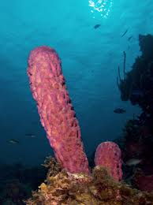
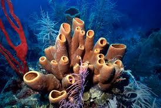
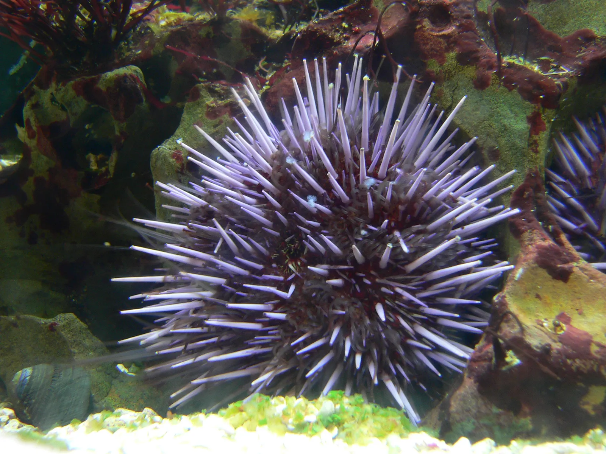
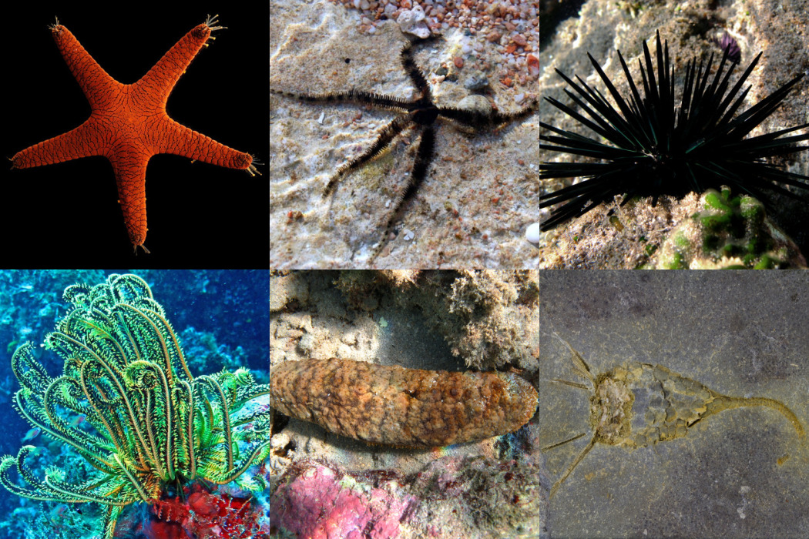
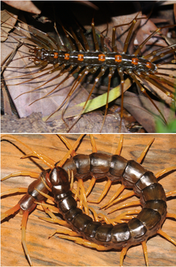
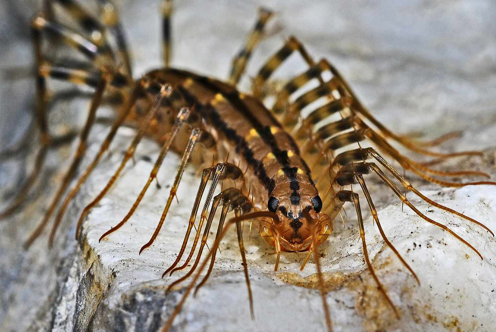

Invertebrates
| Images | Description |
|---|---|
|   |
Sponges (Phylum Porifera) are among the oldest and simplest multicellular organisms on Earth, with fossil records dating back
over (600 million years ). These fascinating aquatic animals lack true tissues, organs, and nervous systems, yet thrive in
diverse marine (and some freshwater) environments worldwide. Sponges filter vast amounts of water—up to 20,000 times their body
volume daily—using specialized collar cells (choanocytes) to trap bacteria and organic particles.
Their porous bodies, supported by skeletal structures of (spicules) (made of silica or calcium carbonate) or (spongin fibers),
exhibit remarkable variety in shape, color, and size—from tiny crusts to barrel sponges over (2 meters tall).
Unlike most animals, sponges reproduce both (sexually) (releasing sperm into the water to fertilize eggs) and (asexually)
(through budding or regenerative fragments). Some species form symbiotic relationships with photosynthetic bacteria or algae,
gaining energy from sunlight. Though sessile, sponges defend themselves with toxic chemicals that have inspired
(anti-cancer and antibiotic drugs) in human medicine. Their unique water-filtering efficiency even inspires engineering projects for
water purification systems.
As (ecosystem engineers), sponges provide microhabitats for shrimp, crabs, and fish while recycling nutrients in coral reefs and
deep-sea environments. Their extreme resilience—some can survive freezing, drying, or reassembling after being blended—makes them a
model for studying animal evolution and cellular regeneration. Despite their simplicity, sponges play a (critical role) in ocean health
and continue to reveal biological secrets that challenge our understanding of animal complexity.
Learn more |
|   |
Echinoderms (Phylum Echinodermata) are a unique and ancient group of marine invertebrates characterized by their radial symmetry,
calcareous endoskeletons, and a remarkable water vascular system that powers their movement and feeding.
This phylum includes familiar organisms such as starfish , sea urchins, sand dollars, brittle stars, and sea cucumbers ,
all of which play vital roles in ocean ecosystems. Echinoderms are exclusively marine and are found in nearly every underwater habitat,
from shallow tidal pools to the abyssal depths of the ocean floor. One of their most distinctive features is their five-part radial
symmetry though their larvae exhibit bilateral symmetry, hinting at their evolutionary relationship with chordates.
The (water vascular system), a network of hydraulic canals, enables echinoderms to move using tube feet—small,
flexible appendages that also assist in respiration, feeding, and sensory perception. Many echinoderms, like starfish,
are formidable predators or scavengers, capable of prying open bivalve shells or regenerating lost limbs, while
sea urchins use their specialized mouthparts to scrape algae off rocks.
Sea cucumbers, on the other hand, play a crucial role in nutrient cycling by ingesting sediment and recycling organic matter.
Echinoderms have been around for over 500 million years, with fossil records showing their dominance in ancient seas.
Today, they continue to influence marine biodiversity, serving as both keystone species (like the starfish Pisaster ochraceus),
which maintains intertidal diversity and prey for fish, otters, and seabirds. Some, like sea urchins, are economically
important—either as delicacies in global cuisines or as destructive forces in kelp forest overgrazing. Their regenerative abilities,
particularly in starfish that can regrow entire bodies from a single arm, make them subjects of intense biomedical research.
With their otherworldly forms and ecological significance, echinoderms remain one of the most fascinating and ecologically
indispensable groups in the marine world.
Learn more |
|   |
Centipedes (Class Chilopoda) are fascinating and ancient arthropods known for their elongated, segmented bodies and numerous
legs—one pair per body segment—with some species possessing as many as 177 pairs, though most have between 15 and 30 pairs.
These fast-moving, venomous predators belong to the subphylum Myriapoda and are found in diverse habitats worldwide,
from tropical rainforests to arid deserts and even urban environments. Unlike their distant relatives, millipedes,
centipedes are carnivorous hunters, using their modified front legs, called forcipules, to deliver venom that paralyzes prey such
as insects, spiders, worms, and even small vertebrates like lizards and mice. Their venom, while rarely dangerous to humans,
can cause painful bites in larger species like the Amazonian giant centipede , which can grow up to 12 inches (30 cm) long.
Centipedes have a highly flexible, flattened body covered in a tough exoskeleton,
allowing them to squeeze into tight spaces under rocks, logs, and leaf litter. They possess simple eyes or, in some cases,
are completely blind, relying instead on their long antennae to detect vibrations and chemical signals in their environment.
Some species, like the house centipede , are even beneficial to humans, as they help control pest populations indoors.
Reproduction in centipedes varies; some lay eggs, while others give birth to live young, with maternal care observed in certain
species where the female guards her eggs until they hatch.
With a fossil record dating back over 400 million years, centipedes are among the oldest terrestrial arthropods,
having adapted to nearly every land habitat. Their remarkable speed, venomous efficiency, and resilience make them both feared
and admired. Despite their sometimes intimidating appearance, centipedes play a crucial ecological role as natural pest controllers,
maintaining balance in insect populations. Their unique biology, including regenerative abilities and complex venom chemistry,
continues to intrigue scientists studying evolution, neurotoxins, and predator-prey dynamics in the animal kingdom.
Learn more |